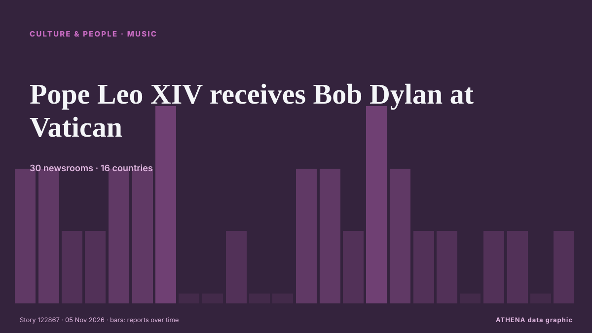

Música
PatrocinadoPresentado por  Cybernetics and Artificial Intelligence Lab Welcome to the Cybernetics and Artificial Intelligence Laboratory, established at the Department of Business Administration of the National and Kapodistrian University of Athens. The lab is headed by Professor Dimitrios Thomakos. The lab aims to do research that can be published in top venues. Our research uses tools and methods of Artificial Intelligence, and lies in the following areas: - Forecasting - Decision making - Cyber security - Finance We are always looking forward to collaborating with exceptional students!
Cybernetics and Artificial Intelligence Lab Welcome to the Cybernetics and Artificial Intelligence Laboratory, established at the Department of Business Administration of the National and Kapodistrian University of Athens. The lab is headed by Professor Dimitrios Thomakos. The lab aims to do research that can be published in top venues. Our research uses tools and methods of Artificial Intelligence, and lies in the following areas: - Forecasting - Decision making - Cyber security - Finance We are always looking forward to collaborating with exceptional students!
| 23 oct | 1 |
|---|---|
| 24 oct | 0 |
| 25 oct | 0 |
| 26 oct | 0 |
| 27 oct | 0 |
| 28 oct | 0 |
| 29 oct | 0 |
| 30 oct | 2 |
| 31 oct | 1 |
| 1 nov | 1 |
| 2 nov | 4 |
| 3 nov | 7 |
| 4 nov | 7 |
| 5 nov | 0 |
Los titulares se muestran en inglés, tal como se publicaron.

Pope Leo XIV receives Bob Dylan at Vatican
(ANSA) - ROME, 04 NOV - Bob Dylan met Pope Leo XIV at the Vatican Wednesday. de ANSA English
Sithelo Shozi welcomes baby girl with Zimbabwean husband
IOL “The Masked Singer South Africa” detective Sithelo Shozi is officially a mother of four. de NewZimbabwe
Best Memes and TikToks After Midterms’ Blue Wave, From Regina George to ‘The Office’ References
After Democrats flipped the U.S. House and Senate, some people took to social media to express their euphoric feelings as well as take jabs at Donald Trump. de The Hollywood Reporter
Harry Styles dresses as viral ‘pizza rat’ for final Madison Square Garden show
His band continued the theme by dressing up as New York City landmarks and references. de Evening Standard (London)
My Chemical Romance Leads ‘Parade’ of Reissues Marching Onto Billboard 200 Albums Chart
On the new Billboard Pop Shop Podcast, Katie & Keith are taking a closer look at re-released albums from Beyoncé, The Beatles, Mac Miller & more. de Billboard
Christine And The Queens – “Rendez-vous Avec Toi”
“Rendez-vous avec toi” arrives alongside an English counterpart, “Rendez-vous in your arms” de Pitchfork news
Pixies share unearthed classic tracks from ‘Bossanova’ and ‘Trompe le Monde’ eras
They date back to 1987 and have been released on streaming platforms for the first time. de NME
Kennedy Center Honorees Class Of 2026: Paul Anka, David Foster, Andy Garcia, David Mamet & Barbara Mandrell
One day ahead of D.C.’s Big Day, we have the latest recipients of the annual Kennedy Center Honors. de Deadline
Burnham told ‘you’re a musician’ after playing steel drum in Caribbean
The Prime Minister and Foreign Secretary Ed Miliband duetted on a version of Mary Had A Little Lamb. de The Irish News (Belfast)
‘Beds Are Burning,’ ‘Friday on My Mind’ Among First Songs Inducted Into Australia’s National Songbook
An initiative of APRA AMCOS and NFSA, the project preserves “the songs that have helped shape Australia’s cultural identity.” de Billboard
Music and dance carry on friendship stories along ancient Silk Road in Dunhuang
Inspired by a 2,000-year-old archaeological discovery, the large-scale production brings together more than 80 performers to tell a story of love, friendship and cultural encounters through dance… de to vima
Toluwanisings’ wife, father, others sign peace undertaking
The Oyo State Police Command has brokered peace between the family and associates of late Nigerian singer Olayemi Bayonle Bolaji, popularly known as Toluwanisings, following disagreements over his… de Vanguard
Rock star Bruce Springsteen warns against government interference in US midterms
Springsteen, known for his tracks Born To Run and Dancing In The Dark, is a vocal Trump critic. de The Straits Times
35 best Christmas gifts for 2026 from £2.99 for her, him and beauty lovers
From £2.99 stocking fillers and Secret Santa ideas to luxury beauty, cosy gifts and presents for hard-to-buy-for men and women, these are 35 Christmas gifts worth considering in 2026. de The Scotsman
Could a catchy Irish trad song save your life? The campaign tackling the ‘Celtic Curse’
A foot-stomping trad song with an unlikely chorus and a potentially lifesaving message is bringing haemochromatosis, the inherited iron overload condition known as the ‘Celtic Curse’, to the airwaves… de The Irish News (Belfast)
Deep Purple postpone tour after Ian Gillan required ‘urgent medical attention’
The band were due to perform in Newcastle, Glasgow, Birmingham, Manchester and London in November as part of their Splat! de Evening Standard (London)
Macklemore 'overwhelmed' after Free Palestine Tour
Macklemore says ‘being human is not complicated’ as he kicked off his Free Palestine tour on Thursday night. de Al Jazeera English
What to Do in Kigali in November 2026
Two confirmed Kigali events in November 2026: the Africa Fintech Summit from 18 to 20 November and a gospel concert at BK Arena on 28 November. de The Rio Times